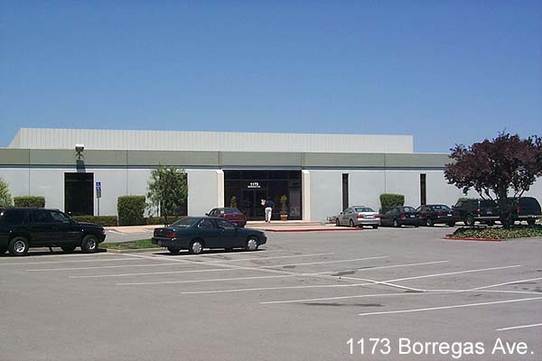

Atari Pinball Manufacturing Building.
From 1976-1978 Atari developed some of the most impressive
and memorable pinball games.
Nolan Bushnell knew Atari could not compete with the likes of
Williams and others in the Pinball arena
with low priced pinballs, it simply couldn't be done at a lower cost,
so as always he chose a better route...
Innovate. Atari created games which were more complex
and challenging,
larger and more eye catching. That
more then made up for the higher costs of the Pinball games.
When Warner Communications looked
at the pinball division and attempted to find ways to cost reduce
the games and found there just wasn't
any way to make them cheaper, they tentatively closed the Pinball
Division and announced it would return
in 1982 with all new Pinball games. However Superman would
be Atari's final Pinball game and with
the Consumer Market earnings down and the Christmas season
nose dive of Warner stock due to lower
then expected sales from the Atari subsidiary, the Pinball Division
would never saw the light of day again.
Gary Rubio, former Atari Consumer Division engineer recalls...
"1173 was later the home of the Consumer
Electronics Division (CED) Quality,
Reliability and Safety (QRS) group which
was managed by Chuck Weller, now a
real estate agent. This is where the
CX-52 joystick was eventually life
tested, and where the concept of the
CX-52P was developed & introduced.
Sadly, I never knew the original history
of the building you mention.
It was never discussed by the time I arrived
in 1982. 1173 was the first building
I worked for Atari. As I recall, the
first things I was working on were
(besides trying to collect games for the
5200 machine every new employee was
allowed to carry home for free),
collecting spare pieces of Atari computer
parts to build my own Atari800
computer, playing the 5200 games, trying
to figure out why the 5200 joystick
controller boot kept tearing, supporting
new LC (low cost) designs on the
5200 and peripherals, including the
eventual surface mount VCS which was
about 2.5 x 3.5" Have you ever
seen this? (It's inside one of those two
boxes I built that was a remote control
VCS and a plug-in box that adapted
any existing x-y joystick into remote
control). I eventually became what I
would call the "OOEM", the "original
original equipment manufacturer"
interface for game hardware and peripherals.
What this means is outside
vendors would come to me with their
designs, and I would plug them in and
see if they would work, or what it
would take to convert them to work.
Atari was so busy trying to build different
(and possibly cheaper) versions
of the VCS and PAM, that outside people
were drooling so badly for new Atari
products they were designing them themselves,
and coming to Atari to make
money from Atari on Atari-compatible
devices. And, some succeeded, Cynex
remote control joystick to mention
one. Later GCC came along with the 7800,
and I was the natural interface to
introduce that product to many Atarians.
Sadly, less than a year later, and
about 6 months too soon for a successful
introduction of the 7800, "BlakJak"
Jack Tramiel bought the company and that
was the end of that."